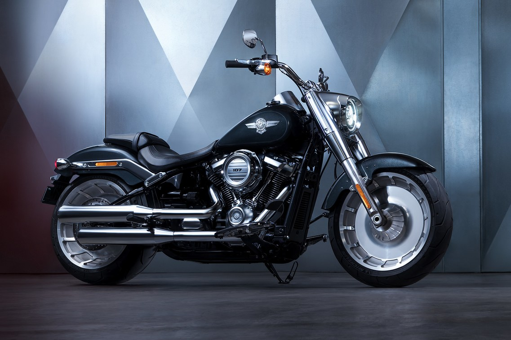
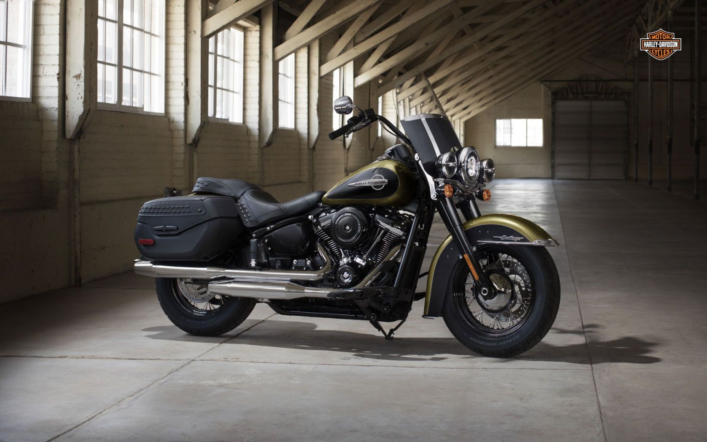
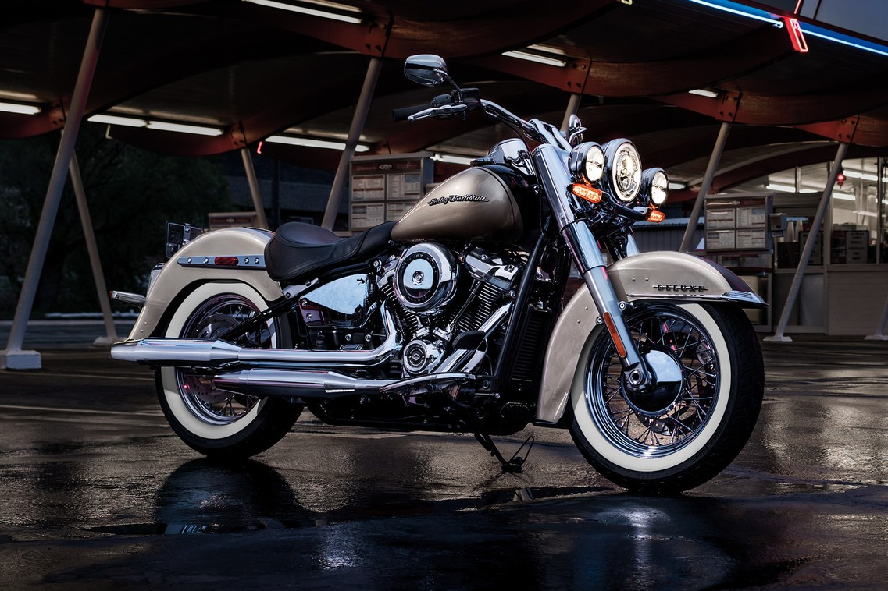
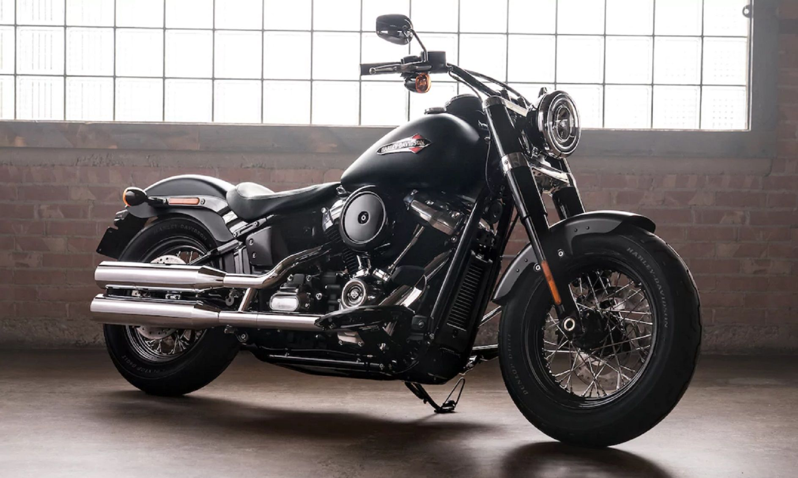
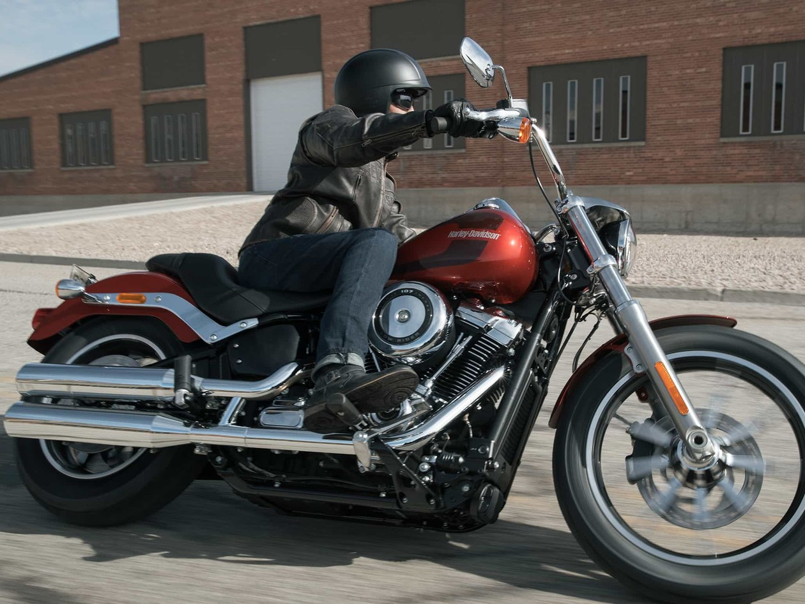
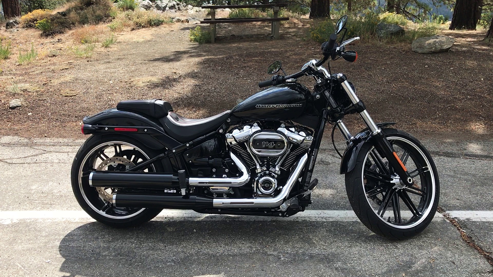
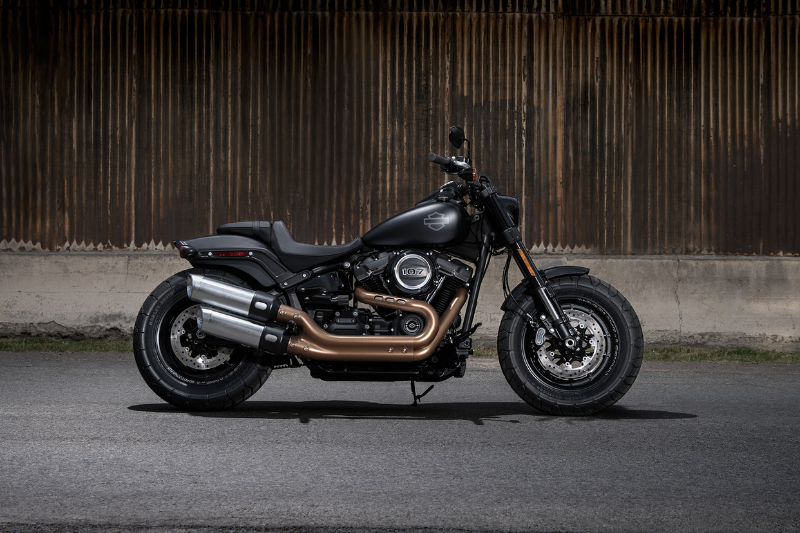

FAT BOY
The look of the Fat Boy is more muscular then ever, thanks to all-new solid-dic wheels,a 240mm rear
tire and the 160mm front tire. Add the jaw-dropping satin chrome finishes and signature
LED forward lighting, and you'rve got a look that will make an even bigger impact then
the firs Fat Voy motorcycle made when it rolled off the line. But now, the Fat Boy is 16 kilograms
ligter. You'll feel the difference that makes the first time you tip it up off its side stand.

HERITAGE CLASSIC
The Heritage Classic used to be an homage to '50s chrome nostalgia.Take a look at the
new one, and you'll see it's anything but that. The history is still there,
and now it's done with style and a modern edge and a totally reinvigorated ride.
At the heart of it all, you get a blacked-out Milwaukee-Eight V-twin engine. You also
get the reduced weight, awesome acceleration, and a smooth ride of an all-new
Softail motorcycle.

DELUXE
The look of the Softail Deluxe has always been Deluxe. It's the classic Showstopper -
born to stand out on a run down the Vagas strip. Now, underneath the bright chrome,
you've got the ride of a seriously modern machine.17 kilograms lighter, easier habdling, massive power
and acceleration, and all-day comfort. Everything a rider expects that technology can deliver. It's
a combination of vintage style and modern know-how unlike anything that ever hit the boulevard, set to the
sound of the Milwaukee-Eight 1745cc V-Twin engine.

SOFTAIL SLIM
The idea behind bobber has always been to strip down and soup up the bike for a more exciting ride.
The all-new softail Slim takes that idea to the edge.it'S 17 kilograms lighter than last year's model.
It's got more power, more lean angle, and a redesigned front and reaar suspension. So you can put the
Milwaukee-Eight 1745cc engine to use, and have some fun on your favorite twisty roads.

LOW RIDER
The low Rider was inspired by the tradition of individualism that came roaring to life in the custom chopper era.
The rake on its front end. dual gauges on the tank and '70s-inspired graphics leave no doubt about that.
Only it's built for rolling faster, harder and longer than any LowRider motorcycle that ever rolled out
of the factory. It's also lighter with the massive, refined power of the Milwaukee-Eight 107 engine,
and lean angles and suspension that let you carve corners in ways they never imagined back in the day.

BREAKOUT
The all-new Breakout model takes the idea of long, lean, tarmac-devouring muscle to the modern edge.
The new smaller tank lets the Milwaukee-Eight engine stand out like a flexing bicep. The 240mm rear tire looks
like it was born to leave a fat patch on the road. The all-new suspension lets you put maximum power to thre street.
An d you'll feel the difference the 16 kilograms weight reduction makes the instant you twist the throttle.
you also get more lean angle and agility than you ever imagined in a bike carrying this much dragster attitude
and style.

FAT BOB
Something this groundbreaking can only come from Harley-Davidson. The all-new Fat Bob, 11 kilograms lighter,
massive Milwaukee-Eight engine power, tarmac-eating traction, a potholt-devouring suspention, agile cornering,
and a take-no-prisoners look. You get a 2-1-2 upswept exhaust, a never-seen-before asymmetrical tank graphic,
inverted forks, fat tyres with an aggressive tread pattern and the all-new ride of the reinvented Softail frame.